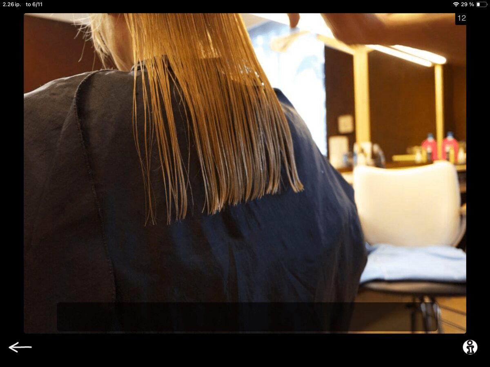
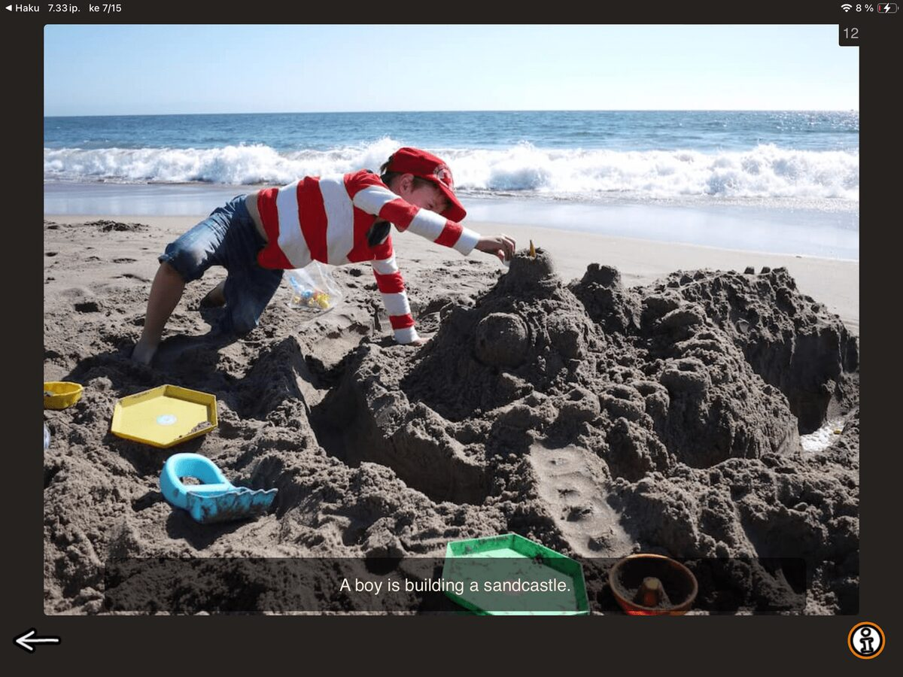

Next up in the Speech Production category is Precise Sentence. This exercise is all about precise, concise expression. So, in the spirit of the task, let's keep this post short and simple too.

First post with the new look!
Precise Sentence is a good fit for clients who tend to be verbose or go off on tangents, leave out key words, or drift off topic. A defined constraint like “use as few words as possible” structures the idea and sharpens the message and guides towards structured language processing.
The task is straightforward: show the client a picture and ask them to form a short, informative sentence based on what they see. You can add structure by specifying a word count, for example: Create a sentence from this picture using three words.
There is a black bar at the bottom of the screen. Tapping the bar reveals a sample sentence for the image. Note that this is not the only acceptable answer, just an idea of what a sentence could look like. together. You can use them when reviewing sentences together to demonstrate precise and simple language and ask “Can you try again and aim for something even more simple, like this example?”
This can be a great task for clients who are just moving to sentence-level expression and find it a bit intimidating. A clear and concrete goal lowers the threshold and gives the process a starting point. You can scaffold the sentence structure with simple questions, for example:

Where? → "At the hairdresser"
Who? → "She"
Where is she? →
“She is at the hairdresser.”

Who? → "a boy"
What is the boy doing ? → ”building"
What is the boy building? → "a sandcastle"
“A boy is building a sandcastle.”
When working on this task, I recommend writing the sentences down. I like to have the client work through a few pictures while I write the sentences down, and review them together. You can also ask your client to do the writing if they are able. Multimodal work supports neuroplasticity, and the combination of writing and speaking can lead to some genuinely surprising moments in language processing and planning. For some clients this can be a great starting point for a discussion on symptom awareness.
There you go, a straightforward task to work on precise and informative expression. Next post will look very similar in terms in task structure, but with almost opposite goals. Stay tuned!